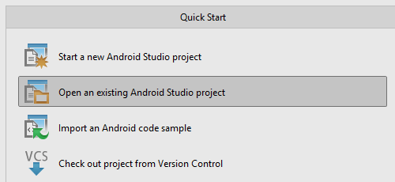

Thank you for purchasing our item, Dictionary Pro. If you have any questions that are beyond
the scope of this user guide, please feel free to contact us via Skype ID: codebhak. While
contacting in Skype kindly mention your username and the Purchase Code of this item.
Thanks so much!
Do not forget to rate this item if you think it is great.
Dictionary Pro is a professional dictionary application template. This template is suitable for building
dictionary applications like English-German, French-Spanish dictionary. Not only dictionary, the template
can be used for glossary apps, spells, formulas and more. For monetizing the app, AdMob code is built into
it. The app is built on the new Android Studio with Google material design implementation, and categorized
data.
The complete features are below:
1. Android Studio project
2. Beautiful user interface with Google material design implementaton
3. Categorized database with XML
4. Add to favorites
5. Admob
6. Sound Support
7. Easy Search
8. Tablet support with two pane layout
9. History and Bookmark
10. Easiness of customizaton
11. Well documented user guide
When you purchase this item you will get the following assets:
1. App source code
2. User guide
As this project now use Android Studio, you need to download Android Studio first in order to be
able to configure the app. Besides Android Studio, you also need to install the latest version of Java
Development Kit (JDK).
You can download Java Development Kit (JDK) here and Android Studio here. Install JDK first to your
computer and after finishing installing JDK, add java path to system variables if necessary. Now, you can install
Android Studio, just follow the instruction until finish installing.
Now, you have already installed all softwares that required to configure Android project. To open
Android project to Android Studio follow the following steps:
1. Run Android Studio, you will see Welcome to Android Studio window when you first tme run Android Studio as you do not have any project yet.
2. Select Open an existing Android Studio project and go to the location of where you store your Android project. After that click Choose button.

3. A new window will open Android project and the project will appear on Project window on the left side.
To run Android project on Android device, please follow the steps below:
1. First, open SDK Manager by clicking Tools > Android > SDK Manager. Make sure that Google
USB Driver has been installed, if not download and install the package.
2. Enable USB Debugging on your device, you can read here about how to enable USB
debugging on android device.
3. Connect your Android device to your computer with USB cable.
4. After that, on Android Studio select Run > Run 'app'. Select your device in Choose Device
window and click OK buton.
5. If you can see your device on Choose Device window, it means that driver of your Android
device is not installed on your computer yet. You need to install your Android device driver
first.
6. If your Android project contain error and or asked to sync your gradle file, open build.gradle file in Gradle directory of the project then click Sync.
7. When running this app you will find that the app still comes with dummy data.
This app use .DB database to store the data. Below are steps to store data to database. Databases are located at dictionary-pro-codebhak\DictionaryPro\src\main\assets\databases. The databases are zipped. Extract, modify and zip it back.
1. Wordbook Database - wordbook.db
1. First, download SQLite Manager addon here and install it to your computer.
2. Run SQLite Manager and open database wordbook.db database.
3. To simplify the database creation work I have provided an excel file. Open wordbook.xlsx present in DBmadeeasy folder. Put your dictionary contents in Column A and Column B. You can see the output in last column. I have added some html to make it look nice on app.
4. Open the wordbook.sql file and paste the copied output.
After pasting...
5. Open the database from wordbook.db and import this sql file.
That's it. It's done.
2. Sub Dictionary - subdict.db
Repeat the same steps. Check the files subdict.xlsx and subdict.sql.
1. Open res/values/strings.xml
2. Put your AdMob pub id in the below string. Replace the exisitng AdMob id.
<string name="banner_ad_unit_id">ca-app-pub-3940256099942544/6300978111</string>
Currently the app runs on a green design. To change it edit the colors file theme_colors_green.xml.
Edit the following three colors.
<color name="green_primary">#0f9d58</color> <color name="green_accent_dark">#097743</color> <color name="green_accent_light">#12b566</color>
Splash screen image splash.png is located at res/drawable-hdpi/splash.png.
Replace that image with any image of your choice.
Totally there are 166 occurences of package names in the app. I am not going the usual way of creating a new package in android studio and renaming files here and there. Here the steps.
Before starting make sure you have notepad++ installed in your system. Or any good word processor software.
1. Open all the java file in dictionary-pro-codebhak\DictionaryPro\src\main\java\
2. Open all the java file in dictionary-pro-codebhak\DictionaryPro\src\main\res\layout\
3. Open all the java file in dictionary-pro-codebhak\DictionaryPro\src\main\res\xml\
3. Open dictionary-pro-codebhak\DictionaryPro\src\main\AndroidManifest.xml
5. Find "com.dictionary.codebhak" and replace with "com.dictionary.yourpackage"
This is the most time efficient method of changing package name.
Renaming packages requires little experience. I am there to help. I can do the renaming through teamviewer if you have problem.
Afer confguring the package name, inserting data, customizing the user interface color and image resources of the app and ensuring that the app has been run properly, the last step is publishing your app to APK file. Below are step by step to publishing Android project to APK fle:
1. On Android Studio, select Build > Generate Signed APK....
2. Generate Signed APK Wizard window will appear. Select app in module section then click
Next.
3. In the next step, if you have already created key store file click Choose existing... and insert
your key store password and alias. If have not created it yet, click Create new... to create
new key store fle.
4. On New Key Store window fill all forms that required and click OK.
5. Last is set the destinaton folder of APK fles, and Build Type to release and click Finish
button.
You can contact me regaring this app or for any app related discussion.
Email: codebhak@yahoo.com
Skype Id: codebhak
You can contact me for any freelance work. Thank You.